Property Flipper — art index
Everything in this folder, at delivery size. Anchors are in ANCHORS.md;
build rules and the file map are in readme.md. Generators: _gen.js,
_gen_color.js, _type.js.
houses50 files house-bungalow-distressed house-bungalow-finished house-bungalow-occupied house-bungalow-working house-bungalow house-colonial-distressed house-colonial-finished house-colonial-occupied house-colonial-working house-colonial house-condo-distressed house-condo-finished house-condo-occupied house-condo-working house-condo house-duplex-distressed house-duplex-finished house-duplex-occupied house-duplex-working house-duplex house-mill_loft-distressed house-mill_loft-finished house-mill_loft-occupied house-mill_loft-working house-mill_loft house-new_build-distressed house-new_build-finished house-new_build-occupied house-new_build-working house-new_build house-ranch-distressed house-ranch-finished house-ranch-occupied house-ranch-working house-ranch house-split_level-distressed house-split_level-finished house-split_level-occupied house-split_level-working house-split_level house-townhouse-distressed house-townhouse-finished house-townhouse-occupied house-townhouse-working house-townhouse house-victorian-distressed house-victorian-finished house-victorian-occupied house-victorian-working house-victorian
houses-color50 files 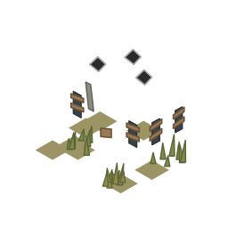
house-bungalow-distressed 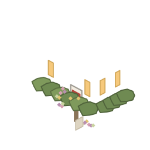
house-bungalow-finished 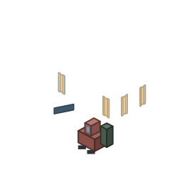
house-bungalow-occupied house-bungalow-working house-bungalow 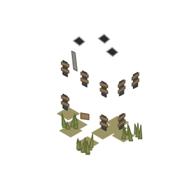
house-colonial-distressed 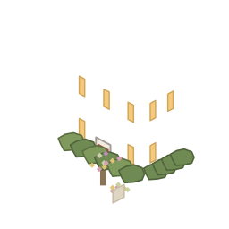
house-colonial-finished 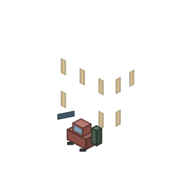
house-colonial-occupied house-colonial-working 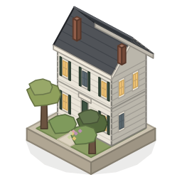
house-colonial 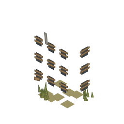
house-condo-distressed 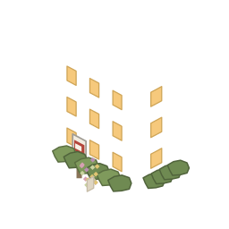
house-condo-finished 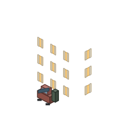
house-condo-occupied 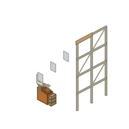
house-condo-working 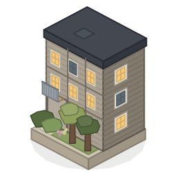
house-condo 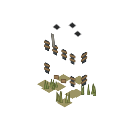
house-duplex-distressed 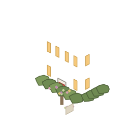
house-duplex-finished 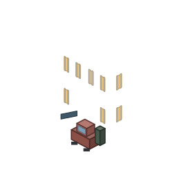
house-duplex-occupied house-duplex-working 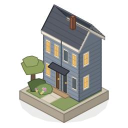
house-duplex 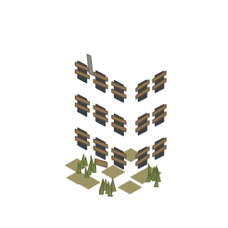
house-mill_loft-distressed 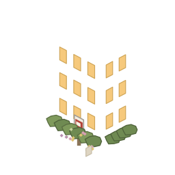
house-mill_loft-finished 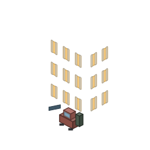
house-mill_loft-occupied house-mill_loft-working house-mill_loft 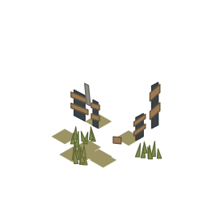
house-new_build-distressed 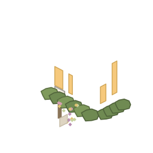
house-new_build-finished 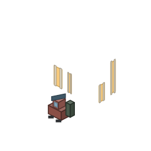
house-new_build-occupied house-new_build-working 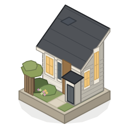
house-new_build 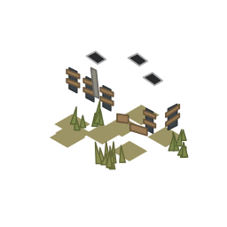
house-ranch-distressed 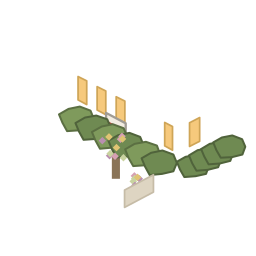
house-ranch-finished 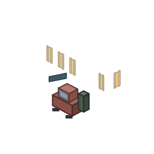
house-ranch-occupied house-ranch-working 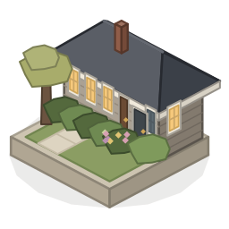
house-ranch 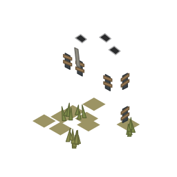
house-split_level-distressed 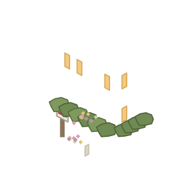
house-split_level-finished 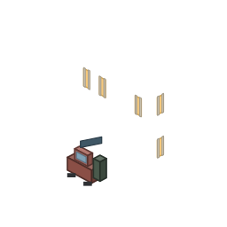
house-split_level-occupied house-split_level-working 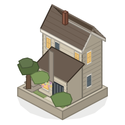
house-split_level 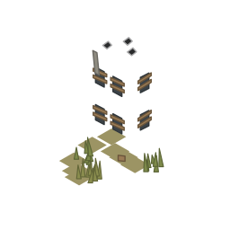
house-townhouse-distressed 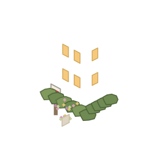
house-townhouse-finished 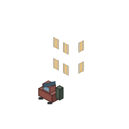
house-townhouse-occupied house-townhouse-working 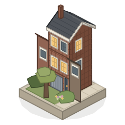
house-townhouse 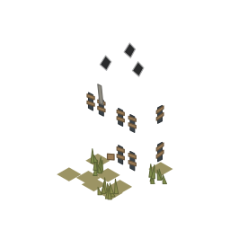
house-victorian-distressed 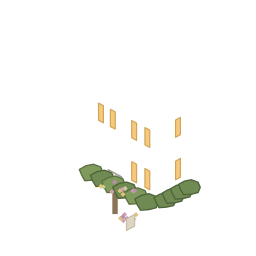
house-victorian-finished 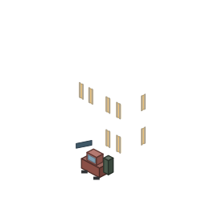
house-victorian-occupied 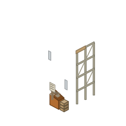
house-victorian-working 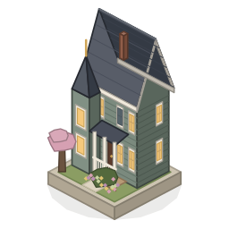
house-victorian houses-dusk50 files 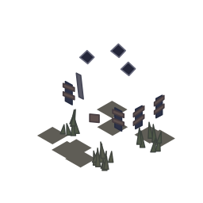
house-bungalow-distressed house-bungalow-finished 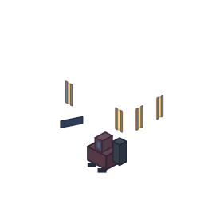
house-bungalow-occupied 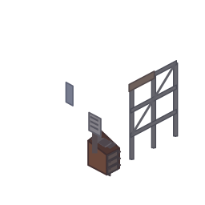
house-bungalow-working 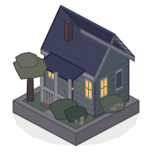
house-bungalow 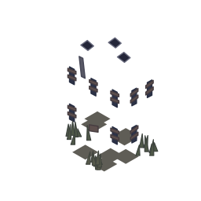
house-colonial-distressed house-colonial-finished house-colonial-occupied 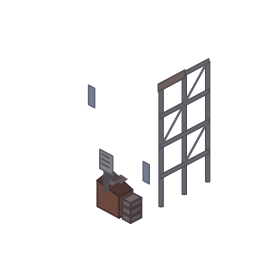
house-colonial-working 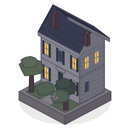
house-colonial 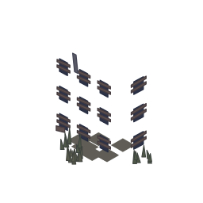
house-condo-distressed 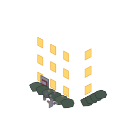
house-condo-finished house-condo-occupied 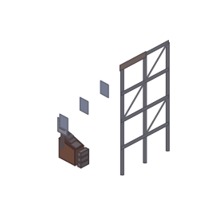
house-condo-working house-condo house-duplex-distressed house-duplex-finished house-duplex-occupied house-duplex-working house-duplex house-mill_loft-distressed house-mill_loft-finished house-mill_loft-occupied house-mill_loft-working house-mill_loft house-new_build-distressed house-new_build-finished house-new_build-occupied house-new_build-working house-new_build house-ranch-distressed house-ranch-finished house-ranch-occupied house-ranch-working house-ranch house-split_level-distressed house-split_level-finished house-split_level-occupied house-split_level-working house-split_level house-townhouse-distressed house-townhouse-finished house-townhouse-occupied house-townhouse-working house-townhouse house-victorian-distressed house-victorian-finished house-victorian-occupied house-victorian-working house-victorian houses-autumn50 files house-bungalow-distressed house-bungalow-finished house-bungalow-occupied house-bungalow-working house-bungalow house-colonial-distressed house-colonial-finished house-colonial-occupied house-colonial-working house-colonial house-condo-distressed house-condo-finished house-condo-occupied house-condo-working house-condo house-duplex-distressed house-duplex-finished house-duplex-occupied house-duplex-working house-duplex house-mill_loft-distressed house-mill_loft-finished house-mill_loft-occupied house-mill_loft-working house-mill_loft house-new_build-distressed house-new_build-finished house-new_build-occupied house-new_build-working house-new_build house-ranch-distressed house-ranch-finished house-ranch-occupied house-ranch-working house-ranch house-split_level-distressed house-split_level-finished house-split_level-occupied house-split_level-working house-split_level house-townhouse-distressed house-townhouse-finished house-townhouse-occupied house-townhouse-working house-townhouse house-victorian-distressed house-victorian-finished house-victorian-occupied house-victorian-working house-victorian
houses-winter50 files house-bungalow-distressed house-bungalow-finished house-bungalow-occupied house-bungalow-working house-bungalow house-colonial-distressed house-colonial-finished house-colonial-occupied house-colonial-working house-colonial house-condo-distressed house-condo-finished house-condo-occupied house-condo-working house-condo house-duplex-distressed house-duplex-finished house-duplex-occupied house-duplex-working house-duplex house-mill_loft-distressed house-mill_loft-finished house-mill_loft-occupied house-mill_loft-working house-mill_loft house-new_build-distressed house-new_build-finished house-new_build-occupied house-new_build-working house-new_build house-ranch-distressed house-ranch-finished house-ranch-occupied house-ranch-working house-ranch house-split_level-distressed house-split_level-finished house-split_level-occupied house-split_level-working house-split_level house-townhouse-distressed house-townhouse-finished house-townhouse-occupied house-townhouse-working house-townhouse house-victorian-distressed house-victorian-finished house-victorian-occupied house-victorian-working house-victorian
furniture14 files lot-driveway lot-fence lot-for_sale_sign lot-hedge lot-parked_car lot-permit_board lot-pool lot-rival_hoarding lot-skip lot-sold_sign lot-street_lamp lot-tree_oak lot-tree_pine lot-tree_slim
furniture-color14 files lot-driveway lot-fence lot-for_sale_sign lot-hedge lot-parked_car lot-permit_board lot-pool lot-rival_hoarding lot-skip lot-sold_sign lot-street_lamp lot-tree_oak lot-tree_pine lot-tree_slim
scout16 files avatar-appraiser avatar-inspector avatar-lender avatar-rival scout-approving scout-briefing scout-digging-1 scout-digging-2 scout-disappointed scout-explaining scout-idle-1 scout-idle-2 scout-pointing scout-walking-1 scout-walking-2 scout-warning
scout-line6 files scout-digging-1 scout-digging-2 scout-idle-1 scout-idle-2 scout-walking-1 scout-walking-2
icons22 files icon-alert-triangle icon-badge-check icon-banknote icon-calendar icon-clipboard-check icon-clock icon-file-text icon-gavel icon-hammer icon-hard-hat icon-home icon-key icon-layers icon-map-pin icon-percent icon-ruler icon-scale icon-search icon-trending-down icon-trending-up icon-users icon-wrench
press13 files charset cover-630x500 masthead-the_weekly_plat plate-boom plate-employer_exit plate-labor_shortage plate-lumber_spike plate-permit_backlog plate-rates_cut plate-rates_spike plate-revitalization plate-school_rezoning plate-slump